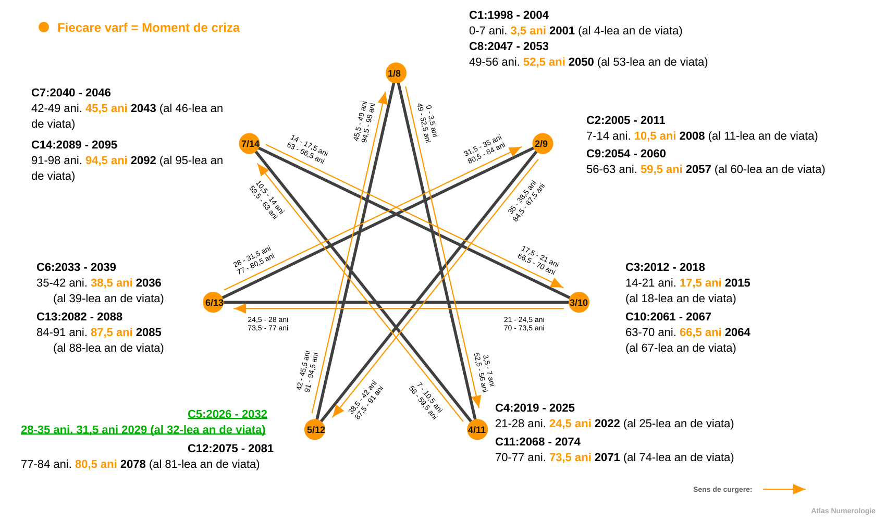
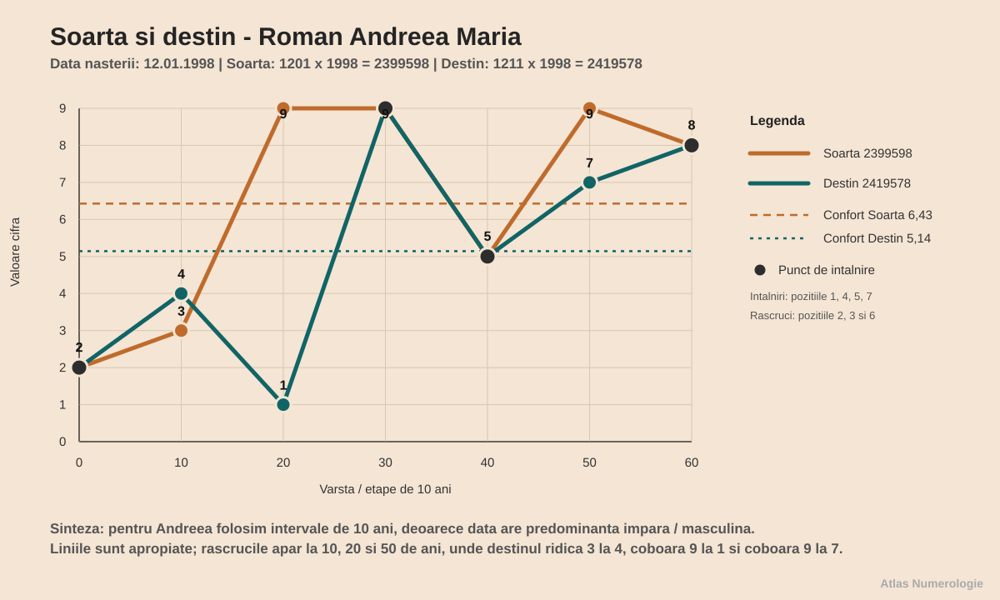
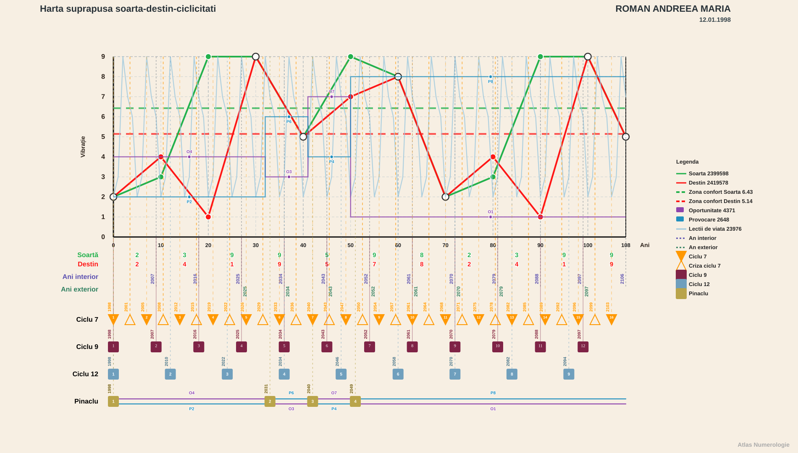
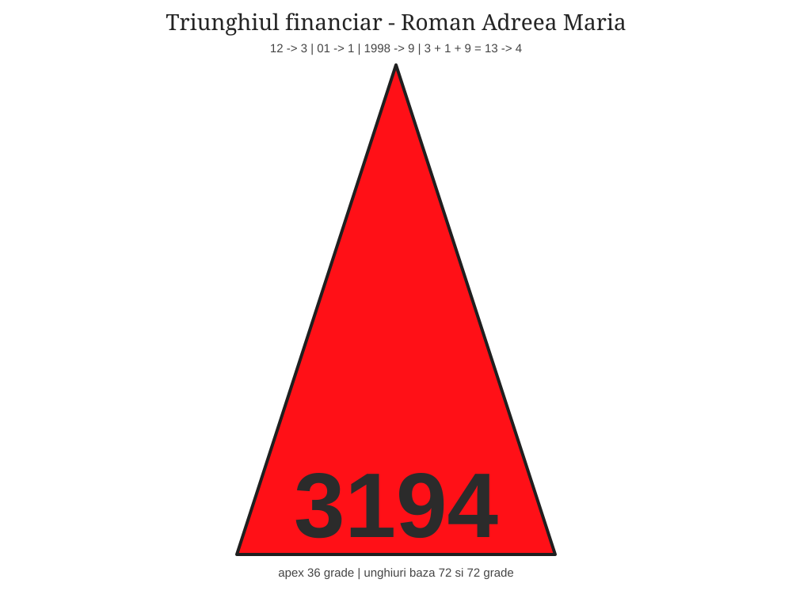
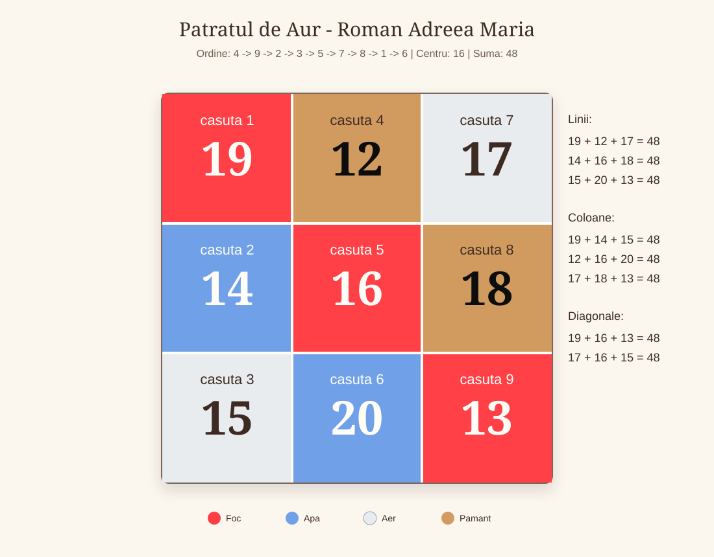

Lucrare numerologica - Roman Andreea Maria - v1.05f
Date generale
- Data nasterii: 12.01.1998
- Nume familie: Roman
- Prenume: Andreea Maria
- Prenume activ folosit in calcul: Andreea
- Data lucrarii: 2026-07-14
Relatii
- Persoana analizata in relatie: Birsan Daniel Robert
- Data nasterii persoana analizata in relatie: 19.02.1998
- Tip relatie analizata: compatibilitate generala / relatie
Capitolul 1. Vibratiile fundamentale
1.1. Vibratia interioara
Vibratia interioara descrie motorul tau nevazut: ceea ce te pune in miscare inainte ca lumea sa observe o alegere sau o reactie.
Rezultatul 3 aduce arhetipul comunicatorului, al creatorului si al omului care transforma trairea in cuvant, gest sau forma.
1.2. Vibratia exterioara
Vibratia exterioara arata prima impresie pe care o lasi si felul in care energia ta intra intr-o incapere, intr-o conversatie sau intr-un grup.
Rezultatul 1 aduce arhetipul initiatorului: prezenta directa, independenta si curajul de a deschide un drum.
1.3. Vibratia globala
Vibratia globala reuneste ceea ce simti in interior cu ceea ce arati in exterior si descrie tonul general al personalitatii tale.
Rezultatul 4 este constructorul: energia care cere stabilitate, disciplina, rabdare si o forma clara pentru ceea ce vrei sa realizezi.
1.4. Vibratia cosmica variabila
Vibratia cosmica variabila surprinde nuanta mobila adusa de ultimele doua cifre ale anului nasterii.
Rezultatul 8 vorbeste despre organizare, dreptate, putere personala si folosirea matura a resurselor.
1.5. Vibratia cosmica totala
Vibratia cosmica totala descrie fundalul generational in care te-ai nascut si felul in care experientele personale se leaga de un sens mai larg.
Rezultatul 9 aduce intelepciune, compasiune, capacitate de sinteza si chemarea de a transforma experienta in sens.
Capitolul 2. Calea destinului, destinul si puntile
Calea destinului, destinul si puntile formeaza impreuna harta drumului tau de baza. Daca vibratiile fundamentale ne-au aratat cum pornesti din interior, cum apari in exterior si cum se vede energia ta globala, aici mergem mai departe si ne uitam la traseu: incotro se duce energia, prin ce fel de experiente se maturizeaza si ce legaturi trebuie facute intre partile tale.
Imagineaza-ti ca viata este un drum lung. Calea destinului este traseul complet de pe harta, cu toate curbele, intersectiile si zonele prin care treci. Destinul este directia principala in care drumul te conduce. Puntile sunt podurile dintre felul in care simti, felul in care te arati si felul in care ajungi sa te implinesti. Cand puntile sunt constiente, nu mai simti ca o parte din tine trage intr-o directie si alta parte in alta directie.
2.1. Calea destinului
Calea destinului pastreaza suma completa a datei de nastere si arata drumul prin care se formeaza directia ta de viata.
Calea 31 combina initiativa lui 3 cu autonomia lui 1 si se reduce la 4, cifra constructiei durabile.
2.2. Destinul
Destinul este esenta redusa a caii tale si indica directia in care experientele tind sa te maturizeze.
Destinul 4 te cheama sa construiesti, sa organizezi si sa transformi inspiratia in ceva stabil.
2.3. Puntea interior - exterior
Puntea dintre interior si exterior masoara distanta dintre ceea ce simti si felul in care te arati lumii.
Puntea 2 cere tact, rabdare si cooperare, astfel incat forta ta interioara sa poata fi inteleasa si de ceilalti.
2.4. Puntea interior - destin
Puntea dintre interior si destin arata ce trebuie ajustat pentru ca motivatia ta profunda sa sustina directia de viata.
Puntea 1 cere initiativa si claritate: pasul dintre ceea ce simti si ceea ce construiesti trebuie facut de tine.
Capitolul 3. Aspecte de indreptat
Aspectele de indreptat nu sunt defecte si nu trebuie citite ca etichete grele. Ele arata mai degraba locul in care energia ta poate fi educata, rafinata si folosita mai constient. Daca destinul arata drumul, aspectele de indreptat arata pietrele de pe drum: nu ca sa te opresti in ele, ci ca sa inveti cum le treci mai matur.
In lectura Andreei, aceasta rubrica este importanta pentru ca lucreaza cu diferenta dintre potentialul drumului si primul impuls al zilei de nastere. Cu alte cuvinte, ne uitam la felul in care initiativa ta interioara poate deveni uneori prea rapida, prea defensiva sau prea orientata spre control, iar apoi vedem cum poate fi transformata in directie limpede.
3.1. Aspecte de indreptat
Aspectele de indreptat nu sunt defecte, ci locuri in care experienta iti cere atentie, rafinare si alegeri mai constiente.
Rezultatul 29 aduce o lectie despre sensibilitate, relatie si maturizarea felului in care reactionezi.
3.2. Solutia aspectelor de indreptat
Solutia arata atitudinea prin care tensiunea poate fi transformata in resursa si invatare.
Rezultatul 2 spune ca rezolvarea vine prin echilibru emotional, ascultare si relatii construite cu tact.
Capitolul 4. Structura matriciala
4.1. Matricea datei de nastere
Matricea datei de nastere aduna cifrele native si cele patru numere de lucru intr-o harta a resurselor, repetitiilor si zonelor de antrenament.
N1 = 1 + 2 + 0 + 1 + 1 + 9 + 9 + 8 = 31
N2 = 3 + 1 = 4
N3 = 31 - (2 x 1) = 29
N4 = 2 + 9 = 11 -> 1 + 1 = 2
sir complet / numar logic = 12011998 + 31 + 4 + 29 + 2 = 12011998314292
Sirul complet 12011998314292 devine baza din care sunt citite casutele si vectorii matricei tale.
4.2. Casutele matricei
| Casuta | Cifre | Valoare | Descriere | Interpretare |
|---|---|---|---|---|
| 1 | 1111 | 4 | identitatea, vointa, caracterul si modul in care persoana isi afirma prezenta | Prezenta puternica a lui 1 arata o vointa vizibila si o nevoie fireasca de autonomie. Andreea poate simti des impulsul de a decide singura, de a porni lucrurile in ritmul ei si de a-si apara punctul de vedere. Cand energia este asezata matur, devine initiativa si curaj; cand se tensioneaza, poate aduce incapatanare sau tendinta de a duce totul pe cont propriu. |
| 2 | 222 | 6 | energia emotionala, empatia, sensibilitatea relationala si vitalitatea subtila | Cele trei cifre de 2 dau multa receptivitate emotionala. Persoana simte repede atmosfera dintre oameni, poate media conflicte si are nevoie de relatii in care blandetea si respectul conteaza. Sensibilitatea aceasta este o resursa, dar cere limite clare, altfel se poate transforma in oboseala, ezitare sau grija excesiva fata de reactiile celorlalti. |
| 3 | 3 | 3 | expresia, comunicarea, talentul, bucuria si felul in care omul isi pune trairile in forma | Cifra 3 este prezenta simplu, dar important: ea deschide canalul de expresie. Andreea isi poate descarca trairile prin cuvant, creativitate, umor sau gesturi spontane. Pentru ca nu este supraincarcata, aceasta energie are nevoie de incurajare si exercitiu constant, mai ales atunci cand emotiile sunt multe si greu de pus in ordine. |
| 4 | 4 | 4 | corpul, disciplina, sanatatea practica, ordinea si stabilitatea concreta | Prezenta lui 4 aduce un punct de sprijin practic. Exista capacitatea de a organiza, de a duce sarcinile pana la capat si de a construi ceva stabil atunci cand directia este clara. Fiind o singura cifra, disciplina nu trebuie fortata rigid, ci cultivata prin rutine simple, pasi mici si responsabilitati bine definite. |
| 5 | - | 0 | centrul, curajul, libertatea, intuitia practica si capacitatea de adaptare | Lipsa lui 5 arata ca libertatea, curajul schimbarii si adaptarea rapida se invata mai degraba prin experienta decat prin instinct imediat. Persoana poate prefera siguranta cunoscuta, mai ales cand nu are repere clare. Lectia aici este sa isi dea voie sa incerce, sa schimbe directia fara vinovatie si sa aiba incredere in intuitia practica formata pe parcurs. |
| 6 | - | 0 | munca, familia, responsabilitatea, grija si felul in care persoana se implica afectiv | Absenta lui 6 nu inseamna lipsa de afectiune, ci o tema de maturizare in felul de a purta responsabilitatea. Grija pentru familie, munca facuta cu inima si asumarea afectiva pot cere constienta, nu automatisme. Este important ca Andreea sa invete diferenta dintre a ajuta din iubire si a prelua prea mult din datoria altora. |
| 7 | - | 0 | spiritualitatea, intuitia, protectia, analiza si legatura cu lumea interioara | Fara 7 in matrice, introspectia profunda si increderea in protectia interioara se pot construi treptat. Persoana poate cauta confirmari din exterior inainte de a-si valida propria intelegere. Practicile de liniste, studiul, observarea viselor sau a semnelor personale pot deveni cai prin care aceasta zona se aseaza mai sigur. |
| 8 | 8 | 8 | socialul, dreptatea, organizarea, puterea si relatia cu resursele | Cifra 8 aduce simt al dreptatii, nevoie de ordine in relatia cu banii, autoritatea si rezultatele concrete. Andreea poate observa rapid ce este corect sau incorect intr-o situatie si are potential de administrare buna a resurselor. Pentru ca energia este concentrata intr-o singura cifra, conteaza sa fie folosita echilibrat, fara presiune excesiva pentru control sau performanta. |
| 9 | 999 | 27 | intelectul, memoria, intelepciunea, sinteza si capacitatea de a intelege experientele | Trei cifre de 9 indica o minte bogata, memorie buna si capacitate de a vedea sensul larg al experientelor. Exista deschidere spre intelegere, compasiune si concluzii mature, uneori chiar peste varsta. Provocarea este sa nu ramana prea mult in analiza sau idealizare, ci sa transforme ceea ce intelege in alegeri simple, aplicate in viata de zi cu zi. |
4.3. Pare si impare
Raportul dintre cifrele pare si impare arata dialogul dintre receptivitate si actiune, dintre adaptare si initiativa.
Predominanta cifrelor impare arata un ritm mai activ, orientat spre initiativa, miscare si decizie personala.
4.4. Vectorii matricei
Vectorii unesc cate trei casute si arata cum circula energia intre resurse care trebuie sa lucreze impreuna. Valoarea totala spune cat de puternica este directia, iar compozitia arata daca forta vine dintr-un traseu complet sau este sustinuta mai ales de una dintre casute.
| Vector | Denumire | Compozitie | Valoare | Descriere si interpretare |
|---|---|---|---|---|
| 123 | Energie | 1111 / 222 / 3 | 13 | Este singurul vector complet: toate cele trei casute participa. Initiativa lui 1 este cea mai accentuata, sensibilitatea lui 2 sustine contactul, iar 3 aduce exprimarea. Pornirea este disponibila si coerenta, dar forta lui 1 cere ca decizia sa nu acopere dialogul. |
| 456 | Vointa | 4 / - / - | 4 | Vector partial, sprijinit numai de casuta 4. Exista simt practic si capacitatea de a pune ordine, insa lipsa lui 5 si 6 cere cultivarea centrului, a flexibilitatii, a ritmului de lucru si a responsabilitatii sustinute. |
| 789 | Creativitate | - / 8 / 999 | 35 | Vector partial, dar foarte puternic prin tripla prezenta a lui 9 si sprijinul lui 8. Viziunea, memoria si intelegerea imaginii mari domina; lipsa lui 7 arata ca intuitia si increderea in sens trebuie asezate constient, pentru ca mintea sa nu preia singura conducerea. |
| 147 | Spiritualitate | 1111 / 4 / - | 8 | Vector partial. Vointa personala si baza practica sunt prezente, cu dominanta clara a lui 1, dar casuta 7 lipseste. Cautarea spirituala se construieste mai sigur prin experienta, disciplina si verificarea interioara decat prin acceptarea rapida a unei credinte. |
| 258 | Social | 222 / - / 8 | 14 | Vector partial, susținut de sensibilitatea repetata a lui 2 si de simtul responsabilitatii din 8. Lipsa centrului 5 poate face ca adaptarea la ceilalti sa consume energie; limitele clare ajuta cooperarea sa ramana echilibrata. |
| 369 | Bunastare materiala | 3 / - / 999 | 30 | Vector partial, dominat net de casuta 9. Ideile, perspectiva si capacitatea de sinteza pot produce valoare, dar lipsa lui 6 cere continuitate, asumarea muncii repetitive si transformarea viziunii intr-un rezultat care poate fi mentinut. |
| 159 | Cariera | 1111 / - / 999 | 31 | Vector partial si una dintre directiile cele mai puternice. Initiativa lui 1 se leaga direct de amploarea lui 9, ceea ce favorizeaza proiectele cu autonomie si sens. Lipsa lui 5 cere un centru stabil, prioritati si masura, altfel energia poate oscila intre porniri intense si suprasolicitare. |
| 357 | Scopuri | 3 / - / - | 3 | Vector partial, sustinut numai de casuta 3. Scopurile se pot naste din idee, cuvant si creativitate, dar lipsa lui 5 si 7 arata ca ele au nevoie de motivatie interioara, incredere si repere intermediare pentru a ramane vii pana la final. |
Privite impreuna, valorile arata un contrast important: mintea, cariera si perspectiva au multa forta, in timp ce sustinerea practica si continuitatea cer mai multa atentie. Vectorul 123 devine fixatie tocmai pentru ca este singurul complet; el ofera mecanismul de pornire prin care pot fi educate treptat zonele incomplete.
4.5. Tendinte, fixatie si caii-trasura-vizitiul
Comparatia cu optimul arata nu doar ce este prezent, ci si distanta dintre energia personala si reperul de echilibru. Matricea optima are totalul 72; matricea Andreei are totalul 52. Diferenta nu este un verdict, ci indica exact zonele in care resursele puternice trebuie legate de deprinderi mai putin automate.
| Casuta | Cantitate personala | Valoare personala | Cantitate optima | Valoare optima | Diferenta | Citire |
|---|---|---|---|---|---|---|
| 1 | 4 | 4 | 3 | 3 | +1 | Initiativa depaseste usor optimul; forta de pornire este mare si are nevoie de cooperare, nu de graba. |
| 2 | 3 | 6 | 3 | 6 | 0 | Sensibilitatea si cooperarea se afla la reperul optim. |
| 3 | 1 | 3 | 3 | 9 | -6 | Exprimarea exista, dar se consolideaza prin practica, joc si incredere in propria voce. |
| 4 | 1 | 4 | 2 | 8 | -4 | Baza practica este prezenta, insa consecventa trebuie antrenata. |
| 5 | 0 | 0 | 2 | 10 | -10 | Centrul, flexibilitatea si masura se construiesc prin alegeri constiente. |
| 6 | 0 | 0 | 2 | 12 | -12 | Continuitatea si responsabilitatea afectiva cer obiceiuri si limite sanatoase. |
| 7 | 0 | 0 | 1 | 7 | -7 | Increderea, rabdarea si sensul se maturizeaza prin experienta. |
| 8 | 1 | 8 | 1 | 8 | 0 | Raportarea la reguli, resurse si autoritate este la optim. |
| 9 | 3 | 27 | 1 | 9 | +18 | Perspectiva si activitatea mentala sunt foarte intense; selectia si odihna previn supraincarcarea. |
La nivelul casutelor, 9 este dominanta majora, cu 27 fata de optimul 9, iar 1 trece usor peste reper. Casutele 2 si 8 sunt la optim. Lipsurile 5, 6 si 7, impreuna cu valorile reduse din 3 si 4, arata ca ideile si initiativa au nevoie de centru, ritm, responsabilitate si incredere pentru a deveni constructii durabile.
Comparatia vectorilor pastreaza aceeasi imagine. Vectorul 789 are 35 fata de optimul 24, 159 are 31 fata de 22, iar 369 are 30 fata de 30. Vectorul 258 are 14 fata de 24, 123 are 13 fata de 18, 147 are 8 fata de 18, 456 are 4 fata de 30, iar 357 are 3 fata de 26. Mintea, cariera si perspectiva sunt mult mai puternice decat vehiculul practic si axa scopurilor.
Fixatia este vectorul plin cu valoarea cea mai mare. In aceasta matrice, numai vectorul 123 are toate cele trei casute ocupate, iar valoarea lui este 13. Energia se fixeaza pe pornire: vointa lui 1, sensibilitatea lui 2 si expresia lui 3 cauta sa intre repede in miscare. Resursa este capacitatea de a initia; tema de echilibru este sa alegi directia inainte ca impulsul sa consume sustinerea disponibila.
Metafora cailor, trasurii si vizitiului descrie felul in care se deplaseaza intregul ansamblu. Caii, vectorul 123 cu valoarea 13, sunt vii si completi: exista combustibil pentru pornire. Trasura, vectorul 456 cu valoarea 4, se sprijina numai pe casuta 4; centrul 5 si continuitatea lui 6 lipsesc, asa ca vehiculul are nevoie de rutina, odihna, limite si munca asezata. Vizitiul, vectorul 789 cu valoarea 35, vede departe prin 8 si mai ales prin tripla prezenta a lui 9, dar lipsa lui 7 cere discernamant si incredere cultivate. Imaginea este a unor cai pregatiti si a unui vizitiu foarte puternic, care trebuie sa ingrijeasca trasura pentru ca drumul sa poata fi parcurs, nu doar intuit.
4.6. Scara bunastarii
Scara bunastarii reuneste cele noua casute si cei opt vectori intr-o singura ordine descrescatoare. Mai intai se calculeaza valoarea fiecarei casute, apoi se aduna cate trei valori pentru fiecare vector. Bara cea mai lunga arata resursa cu acumularea cea mai mare, iar treptele mici sau zero arata unde urcarea are nevoie de sprijin constient.
valoare vector = valoarea celor trei casute componente
ordonare = toate cele 9 casute + toti cei 8 vectori, de la 35 la 0
Varful este format de creativitatea 789, cariera 159 si bunastarea materiala 369. Toate trei sunt alimentate puternic de casuta 9, ceea ce arata ca viziunea, memoria si capacitatea de a intelege ansamblul sunt baza principala. La mijloc apar socialul 258 si energia 123, iar baza scarii reuneste vointa practica 456, scopurile 357 si casutele absente 5, 6 si 7.
Scara se poate citi si ca o piramida: resursa de sus devine baza care sustine restul. Pentru Andreea, ideile si perspectiva pot alimenta relatiile, cariera si rezultatele materiale, dar bunastarea se stabilizeaza numai cand aceasta forta coboara spre centru, responsabilitate, incredere si actiuni repetate. Valorile egale se lucreaza impreuna: 147 cu casuta 8, apoi 456 cu casutele 1 si 4, respectiv 357 cu casuta 3.
Capitolul 5. Codul numerologic personal al numelui
5.1. Numarul de exprimare
Numarul de exprimare arata cum lucreaza numele complet ca instrument de manifestare in lume.
Rezultatul 7 pune in centrul exprimarii tale analiza, discernamantul, intuitia si nevoia de a intelege sensul din spatele experientelor.
5.2. Numarul intim
Numarul intim se formeaza din vocale si descrie dorintele pe care le porti inauntru, chiar si atunci cand nu le spui imediat.
Rezultatul 3 arata o nevoie profunda de comunicare, frumusete, joc si exprimare creativa.
5.3. Numarul de realizare
Numarul de realizare se formeaza din consoane si arata felul practic in care energia numelui produce rezultate.
Rezultatul 4 sustine capacitatea de organizare, disciplina, continuitatea si talentul de a transforma o idee intr-o forma stabila.
5.4. Numarul activ
Numarul activ vine din prenumele folosit zilnic si descrie energia cu care intri cel mai des in interactiuni.
Rezultatul 3 aduce expresie, creativitate, sociabilitate si nevoia de a pune trairile in cuvinte sau forme personale.
5.5. Numarul ereditar
Numarul ereditar citeste numele de familie ca pe o amprenta transmisa prin linia familiala.
Rezultatul 7 sugereaza o mostenire legata de analiza, cautare interioara, discretie si intelegerea sensurilor ascunse.
5.6. Numarul neamului
Numarul neamului pastreaza totalul numelui de familie in intervalul simbolic al celor 22 de arcane.
| Arcana | Interpretare |
|---|---|
![Arcana 3 - Imparateasa, numarul neamului]() Arcana 3 - Imparateasa Numarul neamului | Imparateasa leaga mostenirea familiei de crestere, creativitate, grija si capacitatea de a da forma vietii. Aceasta arcana nu cere sa porti totul pentru ceilalti, ci sa transformi ceea ce ai primit in ceva viu, hranitor si personal. Darul este fertilitatea creativa si puterea de a sustine; umbra apare cand grija devine suprasolicitare sau cand valoarea personala depinde prea mult de aprobarea celor apropiati. |
Rezultatul 3 se leaga de Arcana Imparateasa: crestere, fertilitate creativa, grija si puterea de a da forma vietii.
5.7. Codul numerologic personal al numelui
Codul numerologic personal al numelui reuneste codul fiecarei litere cu numarul de exprimare. El pastreaza amprenta completa a numelui, nu doar reducerea sa finala, si permite sa vezi cum se distribuie cifrele in identitatea purtata zi de zi.
ANDREEA = A1 + N5 + D4 + R9 + E5 + E5 + A1 = 30 -> 3; cod ANDREEA = 1549551
MARIA = M4 + A1 + R9 + I9 + A1 = 24 -> 6; cod MARIA = 41991
Codul arata o identitate in care initiativa lui 1 este cea mai frecventa, dar lucreaza impreuna cu energia practica a lui 4, mobilitatea lui 5 si perspectiva lui 9. Numarul de exprimare 7 inchide codul printr-o invitatie la selectie, profunzime si discernamant: nu ai nevoie sa urmezi toate impulsurile deodata, ci sa alegi ceea ce are sens si poate fi dus pana la capat.
5.8. Cifre intense si influente subtile ale numelui
Frecventele numelui arata ce energii sunt chemate cel mai des prin literele identitatii tale.
Cifra intensa 1 amplifica initiativa, autonomia si nevoia de a avea o directie proprie.
Capitolul 6. Ciclicitatile
6.1. Lectiile de viata
Lectiile de viata formeaza un sir repetitiv care descrie temele ce revin in diferite varste.
Sirul 2, 3, 9, 7, 6 alterneaza cooperarea, exprimarea, intelepciunea, analiza si responsabilitatea afectiva.
6.2. Ciclul de 9 ani
Ciclul de 9 ani seamana cu o respiratie lunga a vietii: incepe, creste, se organizeaza, se schimba si apoi elibereaza ceea ce si-a incheiat rostul. Fiecare an are o tema, dar tema nu decide in locul tau; ea arata tipul de experienta cu care poti lucra mai constient.
| An | Varsta | An personal | Lectie | Interpretare pe inteles simplu |
|---|---|---|---|---|
| 2026 | 28 | 5 | 7 | În 2026 intri într-un an al mișcării. Apar ocazii de schimbare, drumuri noi și situații care îți cer să te adaptezi din mers. Lecția 7 te invită însă să nu alergi după fiecare posibilitate: înainte de o alegere importantă, oprește-te, ascultă-ți intuiția și verifică dacă direcția are sens pentru tine. |
| 2027 | 29 | 6 | 6 | În 2027 atenția se așază mai mult pe familie, relații și sentimentul de acasă. Poți simți dorința de a îngriji, de a repara sau de a aduce armonie în jurul tău. Pentru că și lecția anului este 6, tema responsabilității devine puternică: ai grijă de ceilalți, dar fără să te lași pe tine la urmă. |
| 2028 | 30 | 7 | 2 | 2028 încetinește ritmul exterior și deschide un spațiu pentru analiză, studiu și clarificare interioară. Nu este un an în care trebuie să forțezi răspunsurile. Lecția 2 îți arată că unele concluzii se maturizează prin dialog, răbdare și disponibilitatea de a primi și perspectiva celuilalt. |
| 2029 | 31 | 8 | 3 | În 2029 se vede mai clar ce ai construit și ce poate produce rezultate concrete. Este un moment bun pentru ordine financiară, asumarea autorității și decizii mature în plan profesional. Lecția 3 îți amintește să nu reduci totul la eficiență: felul în care comunici și dai expresie ideilor tale poate deschide uși importante. |
| 2030 | 32 | 9 | 9 | 2030 încheie un ciclu și te ajută să vezi imaginea de ansamblu. Unele proiecte se pot împlini, iar altele își pot arăta limpede limita. Dublarea energiei 9 cere desprindere conștientă: păstrează înțelepciunea experienței, dar nu continua din obișnuință ceea ce și-a încheiat rostul. |
| 2031 | 33 | 1 | 7 | În 2031 începe o etapă nouă. Este anul în care inițiativa personală, curajul și o alegere făcută în nume propriu pot schimba direcția următorilor ani. Lecția 7 cere ca începutul să nu fie doar impulsiv: pornește după ce ai înțeles ce vrei să construiești și de ce acel drum te reprezintă. |
| 2032 | 34 | 2 | 6 | 2032 mută accentul de la inițiativa individuală la cooperare. Relațiile, negocierile și proiectele construite în doi au nevoie de tact și timp. Lecția 6 adaugă întrebarea responsabilității afective: unde poți susține sincer o legătură și unde este nevoie de limite mai sănătoase? |
| 2033 | 35 | 3 | 2 | În 2033 vocea ta cere mai mult spațiu. Este un an favorabil comunicării, creativității, întâlnirilor și proiectelor în care ideile capătă formă vizibilă. Lecția 2 temperează exuberanța și te ajută să transformi exprimarea într-un dialog adevărat, nu doar într-o nevoie de a fi auzită. |
| 2034 | 36 | 4 | 3 | 2034 este anul în care ideile trebuie așezate într-o structură care rezistă. Organizarea, disciplina și pașii constanți valorează mai mult decât graba. Lecția 3 te ajută să păstrezi construcția vie: lasă loc creativității și explică limpede ce faci, în loc să porți singură întreaga povară. |
| 2035 | 37 | 5 | 9 | În 2035 revine nevoia de schimbare, dar cu o perspectivă mai largă decât în ciclul precedent. Poți renunța la o direcție devenită prea strâmtă sau poți explora ceva ce te apropie de un sens mai mare. Lecția 9 cere să alegi libertatea fără risipire și să închizi cu maturitate ceea ce nu mai poate merge alături de tine. |
| 2036 | 38 | 6 | 7 | 2036 readuce în prim-plan casa, relațiile și responsabilitățile asumate din iubire. Este o perioadă bună pentru consolidare și pentru decizii care dau stabilitate vieții personale. Lecția 7 adaugă profunzime: nu căuta armonia doar la suprafață, ci întreabă-te ce legături îți respectă cu adevărat valorile și adevărul interior. |
Andreea, tabelul te ajuta sa observi succesiunea, nu sa astepti evenimente fixe. Acelasi an personal poate fi trait foarte diferit, in functie de alegerile tale, de context si de cat de pregatita esti sa folosesti energia lui.
Ciclul de 9 ani descrie ritmul anilor personali. Fiecare an aduce o tema: inceput, cooperare, expresie, constructie, schimbare, armonie, analiza, putere sau finalizare.
Priveste acesti ani ca pe niste capitole succesive. Nu trebuie sa rezolvi totul intr-un singur an; este suficient sa recunosti tema activa si sa faci pasul potrivit ritmului in care te afli.
6.3. Ciclurile de 7 ani
Ciclurile de 7 ani arata maturizarea, disciplina si formarea structurii interioare. Fiecare interval are un varf si un punct de verificare; ele nu anunta evenimente obligatorii, ci momente in care o tema cere mai multa constienta.

| Ciclu | Ani calendaristici | Varsta | An de criza | Varf | Citire |
|---|---|---|---|---|---|
| C1 | 1998-2004 | 0-7 | 2001 | 1 | Formarea autonomiei si a increderii in initiativa proprie. |
| C2 | 2005-2011 | 7-14 | 2008 | 2 | Relatia, cooperarea si sensibilitatea se cer echilibrate. |
| C3 | 2012-2018 | 14-21 | 2015 | 3 | Exprimarea si creativitatea cauta o forma personala. |
| C4 | 2019-2025 | 21-28 | 2022 | 4 | Constructia, ordinea si responsabilitatea devin centrale. |
| C5 | 2026-2032 | 28-35 | 2029 | 5 | Ciclul activ aduce schimbare, mobilitate si alegerea constienta a directiei. |
| C6 | 2033-2039 | 35-42 | 2036 | 6 | Grija, familia si responsabilitatea afectiva se maturizeaza. |
| C7 | 2040-2046 | 42-49 | 2043 | 7 | Analiza, sensul si viata interioara cer aprofundare. |
Andreea, in 2026 intri in C5, intre 28 si 35 de ani. Energia 5 iti cere aer, miscare si adaptare, dar nu imprastiere. Verificarea din 2029 poate aduce intrebarea foarte concreta daca schimbarile tale au o directie sau sunt doar reactii la presiune. Cand pastrezi cateva repere stabile si alegi constient ce merita continuat, libertatea devine resursa.
Schimbarea devine folositoare cand deschide o etapa mai potrivita fara sa rupa lucrurile care deja functioneaza.
6.4. Ciclul de 12 ani
Ciclul de 12 ani descrie repozitionarea in lume si largirea periodica a orizontului. Il citim simbolic drept ritmul oportunitatilor care cresc impreuna cu responsabilitatea de a le sustine.
| Ciclu | Ani calendaristici | Varsta | Tema | Interpretare |
|---|---|---|---|---|
| C1 | 1998-2009 | 0-12 | Formare primara | Se formeaza baza de incredere, apartenenta si raportare la lume. |
| C2 | 2010-2021 | 12-24 | Explorare si autonomie | Lumea se largeste prin invatare, relatii si desprinderea treptata de vechile forme. |
| C3 | 2022-2033 | 24-36 | Constructie si consolidare | Ciclul activ cere sa transformi oportunitatile in proiecte, relatii si alegeri sustenabile. |
| C4 | 2034-2045 | 36-48 | Expansiune si impact | Experienta acumulata poate primi o forma mai vizibila si mai ampla. |
| C5 | 2046-2057 | 48-60 | Autoritate si transmitere | Ceea ce ai construit poate deveni ghidaj si contributie pentru ceilalti. |
| C6 | 2058-2069 | 60-72 | Intelepciune aplicata | Experienta se transforma in sinteza si discernamant. |
La 28 de ani te afli in C3, pe pozitia 5 a ciclului. Aceasta combinatie sustine schimbarea in interiorul unei etape de constructie: poti ajusta directia, dar este important ca miscarea sa faca loc unei forme mai incapatoare de viata, nu doar sa rupa rutina.
6.5. Pinacluri
Pinaclurile descriu patru etape mari de crestere. Fiecare aduce o oportunitate, adica o energie pe care o poti construi, si o provocare, adica un mod de reactie care are nevoie de echilibru si maturizare.
| Pinaclu | Interval | Oportunitate | Provocare | Interpretare |
|---|---|---|---|---|
| 1 | 0-32 | 4 | 2 | Oportunitatea se exprima prin ordine, stabilitate, disciplina, responsabilitate si capacitatea de a construi pas cu pas; provocarea cere lucrul constient cu sensibilitate, cooperare, diplomatie, rabdare si capacitatea de a crea echilibru intre oameni. |
| 2 | 33-41 | 3 | 6 | Oportunitatea se exprima prin comunicare, creativitate, bucurie, spontaneitate si talentul de a da forma trairilor prin cuvant sau gest; provocarea cere lucrul constient cu iubire, grija, familie, responsabilitate afectiva, estetica si dorinta de echilibru. |
| 3 | 42-50 | 7 | 4 | Oportunitatea se exprima prin introspectie, analiza, intuitie, spiritualitate si cautarea unui sens mai adanc; provocarea cere lucrul constient cu ordine, stabilitate, disciplina, responsabilitate si capacitatea de a construi pas cu pas. |
| 4 | 51+ | 1 | 8 | Oportunitatea se exprima prin autonomie, vointa, curajul inceputului si nevoia de a lua decizii proprii; provocarea cere lucrul constient cu organizare, dreptate, rezultate, administrarea resurselor si raportarea matura la autoritate. |
Ele functioneaza ca niste anotimpuri lungi. Nu schimba cine esti, dar muta accentul: intr-o etapa inveti sa cladesti, in alta sa comunici, apoi sa aprofundezi si, mai tarziu, sa iti asumi directia cu mai multa autonomie.
Pinaclurile descriu patru etape mari de crestere. Fiecare are o oportunitate si o provocare. Oportunitatea arata ce se poate construi, provocarea arata ce trebuie echilibrat.
Citirea utila nu este „ce mi se va intampla?”, ci „ce calitate pot educa in aceasta etapa?”. In felul acesta, oportunitatea devine actiune, iar provocarea nu mai este obstacol, ci directie de crestere.
6.6. Ani importanti interiori si exteriori
Anii interiori si anii exteriori descriu doua feluri diferite in care intalnesti schimbarea. Anii interiori marcheaza momentele in care miscarea porneste din tine: se modifica perspectiva, se maturizeaza o decizie sau apare nevoia de a te aseza altfel fata de propria viata. Anii exteriori arata momentele in care schimbarea devine vizibila prin oameni, contexte, responsabilitati, oportunitati sau evenimente concrete.
Priveste cele doua siruri ca pe doua ceasuri. Unul masoara ritmul constiintei tale, iar celalalt masoara ritmul lumii din jur. Cand ele indica acelasi an, ceea ce se clarifica inauntru cere si un raspuns in exterior.
Pentru calcul pornim de la anul nasterii. La seria interioara folosim reducerea anului si continuam prin adunari succesive. La seria exterioara folosim suma completa a cifrelor anului, apoi continuam cu ritmul rezultat.
Ani exteriori: 1998 + 27 = 2025 -> 2 + 0 + 2 + 5 = 9 -> 2025 + 9 = 2034.
| An | Varsta | Interior | Exterior | Descriere / interpretare |
|---|---|---|---|---|
| 2016 | 18 | Da | - | Clarificare interioara si reasezare de directie. |
| 2017 | 19 | - | - | - |
| 2018 | 20 | - | - | - |
| 2019 | 21 | - | - | - |
| 2020 | 22 | - | - | - |
| 2021 | 23 | - | - | - |
| 2022 | 24 | - | - | - |
| 2023 | 25 | - | - | - |
| 2024 | 26 | - | - | - |
| 2025 | 27 | Da | Da | Sincronizare intre schimbarea interioara si contextul exterior; cere o alegere vizibila si asumata. |
| 2026 | 28 | - | - | - |
| 2027 | 29 | - | - | - |
| 2028 | 30 | - | - | - |
| 2029 | 31 | - | - | - |
| 2030 | 32 | - | - | - |
| 2031 | 33 | - | - | - |
| 2032 | 34 | - | - | - |
| 2033 | 35 | - | - | - |
| 2034 | 36 | Da | Da | Sincronizare intre schimbarea interioara si contextul exterior; cere o alegere vizibila si asumata. |
| 2035 | 37 | - | - | - |
| 2036 | 38 | - | - | - |
| 2037 | 39 | - | - | - |
| 2038 | 40 | - | - | - |
| 2039 | 41 | - | - | - |
| 2040 | 42 | - | - | - |
| 2041 | 43 | - | - | - |
| 2042 | 44 | - | - | - |
| 2043 | 45 | Da | Da | Sincronizare intre schimbarea interioara si contextul exterior; cere o alegere vizibila si asumata. |
| 2044 | 46 | - | - | - |
| 2045 | 47 | - | - | - |
| 2046 | 48 | - | - | - |
Anii 2025, 2034 si 2043 apar in ambele serii. Din 2025, schimbarile interioare si cele exterioare se sincronizeaza din nou la fiecare noua ani, pe aceeasi cadenta cu ciclul numerologic de noua ani.
Aceste praguri pot face ca o intelegere interioara sa nu mai poata ramane doar gand. Ceea ce se maturizeaza in tine cere discutie, alegere, reorganizare sau actiune concreta. Nu este o promisiune de evenimente fixe, ci un moment in care interiorul si exteriorul iti cer sa lucrezi in aceeasi directie.
Mai intai observa ce s-a schimbat deja in tine, apoi raspunde presiunii exterioare. Cand cele doua miscari sunt aliniate, decizia devine mai clara si poate fi sustinuta pe termen lung.
6.7. Soarta si destin
Comparatia Soarta-Destin pune alaturi baza primita si directia spre care se organizeaza implinirea.

| Varsta | Soarta | Destin | Citire |
|---|---|---|---|
| 0-10 ani | 2 | 2 | Punct de intalnire: sensibilitatea si relatia sustin ambele linii. |
| 10-20 ani | 3 | 4 | Rascruce intre exprimare si nevoia de structura. |
| 20-30 ani | 9 | 1 | Rascruce intre perspectiva larga si afirmarea unei directii proprii. |
| 30-40 ani | 9 | 9 | Punct de intalnire: sensul si maturizarea devin comune. |
| 40-50 ani | 5 | 5 | Punct de intalnire: schimbarea si libertatea cer alegeri asumate. |
| 50-60 ani | 9 | 7 | Rascruce intre deschiderea catre ansamblu si aprofundarea interioara. |
| 60-70 ani | 8 | 8 | Punct de intalnire: resursele si responsabilitatea se integreaza. |
Confortul Sortii este mai ridicat decat confortul Destinului. Asta sugereaza ca ceea ce este familiar si primit poate parea mai usor decat directia care trebuie activata constient. Cresterea apare atunci cand nu ramai doar in ceea ce stii deja sa faci, ci accepti efortul de a-ti construi propria directie.
Rascrucile pot fi privite ca locuri de alegere, nu ca defecte ale traseului. Intalnirile iti arata resursele stabile, iar diferentele iti arata unde ai de pus vointa si discernamant.
6.8. Harta suprapusa
Harta suprapusa aduce pe acelasi plan liniile Soarta-Destin, ciclurile de 7, 9 si 12 ani, anii importanti si pinaclurile. Ea te ajuta sa vezi cand mai multe ritmuri sustin aceeasi tema si cand o schimbare interioara cere raspuns concret in exterior.

Andreea, foloseste aceasta harta ca pe o vedere de ansamblu. Ea nu fixeaza evenimente, ci iti arata unde merita sa privesti mai atent felul in care se intalnesc ritmul interior, contextul si alegerile tale.
Capitolul 7. Relatii
7.1. Omuletul relatiilor
Andreea, aici nu privim relația ca pe un verdict, ci ca pe o hartă de orientare. Omulețul relațiilor așază cifrele tale și ale lui Daniel pe aceeași geometrie și arată ce aduce fiecare, ce resurse aveți deja în comun și ce trebuie construit mai conștient. Scopul nu este să stabilim cine are dreptate, ci să înțelegem cum puteți face relația mai limpede, mai stabilă și mai vie.

În această relație, tu vii mai puternic pe zona lui 1: inițiativă, identitate, pornire și nevoia de a simți că poți decide pentru tine. Daniel aduce o concentrare puternică pe 9: viziune, sens, capacitatea de a lega experiențele și de a privi lucrurile dintr-un unghi mai larg. Aici vă puteți completa frumos: tu poți pune lucrurile în mișcare, iar el poate vedea încotro duc și ce semnificație au. Tensiunea apare atunci când inițiativa ta este simțită ca grabă sau când perspectiva lui devine prea multă analiză. Soluția este să transformați diferența într-un schimb: tu aduci impulsul de început, el aduce imaginea de ansamblu.
Zonele comune sunt 1, 2, 8 și 9. Prezența lui 1 arată că amândoi aveți voință și aveți nevoie să vă simțiți respectați ca persoane distincte; relația funcționează mai bine când deciziile nu devin concurs de autoritate. Cifra 2 arată sensibilitate și capacitatea de a coopera, dar această zonă nu este atât de abundentă încât reglajul emoțional să se producă singur. Aveți nevoie să spuneți direct ce simțiți și ce așteptați, fără presupunerea că celălalt ar trebui să ghicească. Cifra 8 vă oferă un teren practic comun: puteți discuta despre responsabilități, bani, organizare și obiective concrete. Cifra 9 aduce nevoia ca relația să aibă sens, să crească și să nu rămână blocată doar în rutina zilnică.
Ceea ce puteți realiza împreună este exprimat prin rezultatul 4. Pentru voi, relația nu se împlinește numai prin atracție sau emoție, ci prin ceea ce reușiți să construiți și să mențineți: stabilitate, ritm, reguli clare, proiecte comune și gesturi care se repetă suficient încât să creeze încredere. Patru cere fundație. Poate însemna o casă bine organizată, o direcție comună, responsabilități împărțite echitabil sau pur și simplu certitudinea că fiecare se poate baza pe cuvântul celuilalt. Dacă dați intensității voastre o formă concretă, relația poate deveni un spațiu sigur, nu doar unul puternic.
Tema de rezolvat împreună este 2, adică răbdarea, ascultarea și felul în care faceți loc sensibilității celuilalt. Asta poate însemna să nu împingi imediat lucrurile spre o decizie atunci când Daniel are nevoie să înțeleagă mai întâi ce se întâmplă. Pentru el, înseamnă să nu rămână doar în analiză, ci să spună clar ce simte și ce dorește. Doi nu cere renunțarea la propria identitate; cere ca două identități să învețe să coopereze. Întrebările simple — „ce ai simțit?”, „de ce ai nevoie?” și „cum putem rezolva împreună?” — pot schimba mult felul în care traversați momentele tensionate.
Lipsurile comune sunt 3, 4, 5, 6 și 7. Ele nu spun că relația este incompletă, ci arată ce nu vine automat și trebuie exersat intenționat. Lipsa lui 3 cere comunicare deschisă, umor și exprimarea la timp a lucrurilor mici, înainte să se adune. Lipsa lui 4 este importantă tocmai pentru că realizarea comună este 4: stabilitatea este posibilă, dar trebuie creată prin obiceiuri și consecvență. Lipsa lui 5 cere libertate sănătoasă, flexibilitate și acceptarea schimbării fără reacții bruște. Lipsa lui 6 vă invită să transformați grija într-o responsabilitate împărțită, fără sacrificiu unilateral. Lipsa lui 7 cere conversații profunde, sinceritate și răbdarea de a înțelege sensul unei experiențe, nu doar de a o încheia repede.
Practic, relația se așază mai bine când nu vă bazați numai pe atracție, intensitate sau intuiția că celălalt „ar trebui să știe”. Spuneți ce aveți nevoie, stabiliți câteva repere comune și păstrați loc atât pentru inițiativa ta, cât și pentru profunzimea lui Daniel. Când lucrați conștient cu aceste diferențe, tu poți aduce curajul de a porni, el poate aduce perspectiva, iar împreună puteți da relației forma stabilă indicată de rezultatul 4.
Capitolul 8. Spirit
8.1. Inclinatii profesionale
Inclinatiile profesionale nu impun o meserie, ci descriu felul in care energia ta poate lucra, invata si produce valoare.
DA profesional = luna 1 + suma anului 27 = 28 -> 28 - 22 = 6, Arcana Indragostitii.
| Arcana | Interpretare profesionala |
|---|---|
![Arcana 6 - Indragostitii, aplicabilitate profesionala]() Arcana 6 - Indragostitii Aplicabilitate profesionala / DA | Directia favorabila lucreaza prin alegere, cooperare si alinierea muncii cu valorile tale. Cresc proiectele in care poti crea legaturi, negocia, armoniza si decide constient. |
![Arcana 9 - Ermitul, obstacole profesionale]() Arcana 9 - Ermitul Obstacole / NU | Blocajul apare prin retragere excesiva, supragandire sau asteptarea certitudinii perfecte. Profunzimea este un dar, dar trebuie adusa inapoi in dialog si actiune. |
Directia favorabila lucreaza prin alegere, cooperare si alinierea muncii cu valorile tale. Cresc proiectele in care poti crea legaturi, negocia, armoniza si decide constient.
Blocajul apare prin retragere excesiva, supragandire sau asteptarea certitudinii perfecte. Profunzimea este un dar, dar trebuie adusa inapoi in dialog si actiune.
Arcana 9 arata ce poate bloca parcursul: retragerea prea lunga, supragandirea sau asteptarea certitudinii perfecte. Arcana 6 arata directia favorabila: alegeri asumate, colaborari potrivite si munca in care valorile personale pot ramane vii.
8.2. Inclinatii ezoterice
Inclinatiile ezoterice arata sensibilitatea ta fata de simboluri, intuitie, cercetare interioara si sensurile care nu se vad imediat. Nu vorbim despre o obligatie de a urma o practica anume, ci despre felul in care cauti explicatia din spatele unui eveniment si despre instrumentele care te pot ajuta sa verifici ceea ce simti.
Pentru calcul eliminam zerourile calendaristice de completare din data nasterii, apoi impartim succesiv la 7. Prima operatie indica directia principala, iar a doua arata domeniul secundar prin care aceasta inclinatie se poate exprima.
Codul principal 5 te aseaza in zona ezoterismului stiintific. Interesul pentru ceea ce este subtil functioneaza cel mai bine atunci cand intuitia este insotita de observatie, comparatie si verificare. Nu iti este suficient sa simti ca exista o legatura; ai nevoie sa urmaresti repetitiile, sa cauti mecanismul si sa vezi daca aceeasi ipoteza ramane valabila in mai multe situatii.
Aceasta orientare poate sustine studiul sistemelor simbolice, numerologiei, astrologiei, psihologiei, tiparelor comportamentale sau al oricarui domeniu in care intuitia poate fi organizata intr-o metoda. Darul codului 5 este curiozitatea vie; provocarea este sa nu sari prea repede de la o explicatie la alta inainte sa verifici ceea ce ai observat.
Codul secundar 5 conduce spre chiromantie. Aici accentul cade pe observarea semnelor concrete: forma, proportia, liniile, modificarile si relatia dintre detalii. Pentru tine, aceasta directie poate functiona ca un exercitiu de atentie si asociere, prin care inveti sa legi un simbol vizibil de o poveste de viata fara sa transformi observatia intr-un verdict rigid.
Faptul ca ambele operatii conduc la 5 intareste aceeasi tema: cercetare prin experienta, mobilitate intelectuala si verificarea practica a simbolurilor. Directia potrivita nu este credinta oarba, ci explorarea disciplinata.
- noteaza observatiile si compara-le in timp, ca sa separi intuitia reala de impresia de moment;
- studiaza numerologia, simbolistica, psihologia si chiromantia din surse structurate, urmarind metoda, nu doar rezultatul;
- lucreaza cu exemple concrete si pastreaza un registru al interpretarilor care s-au confirmat sau au avut nevoie de corectie;
- foloseste meditatia sau perioadele de liniste pentru claritate, apoi verifica intuitia prin fapte si dialog;
- evita concluziile rapide despre oameni si pastreaza interpretarile ca ipoteze de lucru, nu ca sentinte.
Recomandarea pentru tine este sa transformi curiozitatea in metoda. Cand observi un semn, intreaba-te ce date il sustin, ce alta explicatie este posibila si cum poate fi verificat. Astfel, sensibilitatea ta ramane deschisa, dar capata discernamant, coerenta si utilitate practica.
8.3. Codul spiritului si varsta spiritului
Codul spiritului se citeste din ziua si luna nasterii. El arata zona mare de maturizare spirituala si lectia prin care spiritul invata sa isi aseze experienta.
Pentru calcul folosim ziua 12 si luna 1. Cautam ziua pe verticala si luna pe orizontala in tabelul rapid; aceeasi valoare se verifica prin formula validata.
In tabel, pozitia ta este la ziua 12 si luna I, unde apare codul 41. Casutele sunt colorate pe cele patru zone ale maturizarii, iar pozitia ta este evidentiata distinct.
| Ziua | I | II | III | IV | V | VI | VII | VIII | IX | X | XI | XII |
|---|---|---|---|---|---|---|---|---|---|---|---|---|
| 1 | 52 | 50 | 48 | 46 | 44 | 42 | 40 | 38 | 36 | 34 | 32 | 30 |
| 2 | 51 | 49 | 47 | 45 | 43 | 41 | 39 | 37 | 35 | 33 | 31 | 29 |
| 3 | 50 | 48 | 46 | 44 | 42 | 40 | 38 | 36 | 34 | 32 | 30 | 28 |
| 4 | 49 | 47 | 45 | 43 | 41 | 39 | 37 | 35 | 33 | 31 | 29 | 27 |
| 5 | 48 | 46 | 44 | 42 | 40 | 38 | 36 | 34 | 32 | 30 | 28 | 26 |
| 6 | 47 | 45 | 43 | 41 | 39 | 37 | 35 | 33 | 31 | 29 | 27 | 25 |
| 7 | 46 | 44 | 42 | 40 | 38 | 36 | 34 | 32 | 30 | 28 | 26 | 24 |
| 8 | 45 | 43 | 41 | 39 | 37 | 35 | 33 | 31 | 29 | 27 | 25 | 23 |
| 9 | 44 | 42 | 40 | 38 | 36 | 34 | 32 | 30 | 28 | 26 | 24 | 22 |
| 10 | 43 | 41 | 39 | 37 | 35 | 33 | 31 | 29 | 27 | 25 | 23 | 21 |
| 11 | 42 | 40 | 38 | 36 | 34 | 32 | 30 | 28 | 26 | 24 | 22 | 20 |
| 12 | 41 | 39 | 37 | 35 | 33 | 31 | 29 | 27 | 25 | 23 | 21 | 19 |
| 13 | 40 | 38 | 36 | 34 | 32 | 30 | 28 | 26 | 24 | 22 | 20 | 18 |
| 14 | 39 | 37 | 35 | 33 | 31 | 29 | 27 | 25 | 23 | 21 | 19 | 17 |
| 15 | 38 | 36 | 34 | 32 | 30 | 28 | 26 | 24 | 22 | 20 | 18 | 16 |
| 16 | 37 | 35 | 33 | 31 | 29 | 27 | 25 | 23 | 21 | 19 | 17 | 15 |
| 17 | 36 | 34 | 32 | 30 | 28 | 26 | 24 | 22 | 20 | 18 | 16 | 14 |
| 18 | 35 | 33 | 31 | 29 | 27 | 25 | 23 | 21 | 19 | 17 | 15 | 13 |
| 19 | 34 | 32 | 30 | 28 | 26 | 24 | 22 | 20 | 18 | 16 | 14 | 12 |
| 20 | 33 | 31 | 29 | 27 | 25 | 23 | 21 | 19 | 17 | 15 | 13 | 11 |
| 21 | 32 | 30 | 28 | 26 | 24 | 22 | 20 | 18 | 16 | 14 | 12 | 10 |
| 22 | 31 | 29 | 27 | 25 | 23 | 21 | 19 | 17 | 15 | 13 | 11 | 9 |
| 23 | 30 | 28 | 26 | 24 | 22 | 20 | 18 | 16 | 14 | 12 | 10 | 8 |
| 24 | 29 | 27 | 25 | 23 | 21 | 19 | 17 | 15 | 13 | 11 | 9 | 7 |
| 25 | 28 | 26 | 24 | 22 | 20 | 18 | 16 | 14 | 12 | 10 | 8 | 6 |
| 26 | 27 | 25 | 23 | 21 | 19 | 17 | 15 | 13 | 11 | 9 | 7 | 5 |
| 27 | 26 | 24 | 22 | 20 | 18 | 16 | 14 | 12 | 10 | 8 | 6 | 4 |
| 28 | 25 | 23 | 21 | 19 | 17 | 15 | 13 | 11 | 9 | 7 | 5 | 3 |
| 29 | 24 | 20 | 18 | 16 | 14 | 12 | 10 | 8 | 6 | 4 | 2 | |
| 30 | 23 | 19 | 17 | 15 | 13 | 11 | 9 | 7 | 5 | 3 | 1 | |
| 31 | 22 | 18 | 14 | 10 | 8 | 4 | 0 |
Codul 41 intra in zona Haruri, etapa in care experienta acumulata cauta sa devina intelepciune, intuitie, ghidare si serviciu oferit constient celorlalti.
| Zona | Interval cod | Nivel simbolic | Teme principale |
|---|---|---|---|
| Iubire | 1-13 | 0-2.500 ani | relatii, emotii, atasamente, compasiune, vulnerabilitate |
| Ratiune | 14-26 | 2.500-5.000 ani | logica, discernamant, structura, analiza, minte |
| Material | 27-39 | 5.000-7.500 ani | bani, constructie, putere, manifestare, responsabilitate |
| Haruri | 40-52 | 7.500-10.000 ani | intelepciune, haruri spirituale, ghidare, serviciu, intuitie |
Subetapa se calculeaza din codul spiritului, asezand codul pe ciclul celor treisprezece lectii. Calculul de mai jos arata pozitia exacta in matricea lectiilor.
Calcul explicat: Subetapa se calculeaza din Codul Spiritului, care aici este 41. Formula folosita este ((CM - 1) mod 13) + 1, deoarece cele treisprezece lectii se repeta ciclic: scadem 1 ca sa pornim numararea ciclului de la zero, aplicam restul impartirii la 13, apoi adaugam 1 ca sa revenim la numerotarea lectiilor de la 1 la 13.
Pentru Andreea: 41 - 1 = 40. Impartim 40 la 13: 13 x 3 = 39, iar restul este 40 - 39 = 1. Revenim la scara 1-13 prin 1 + 1 = 2. Rezultatul este subetapa 2.
Formula finala: ((41 - 1) mod 13) + 1 = (40 mod 13) + 1 = 1 + 1 = 2
Matricea lectiilor arata cum sunt organizate cele treisprezece subetape ale Codului Spiritului. Ele sunt impartite in patru etape mari: intelegere si stabilizare, experimentare si manifestare, finalizare si orientare catre ceilalti, apoi examenul de integrare.
| Etapa | Descriere etapa | Subetapa | Lectie | Descriere subetapa |
|---|---|---|---|---|
| 1 | Intelegere si stabilizare | 1 | Inceput de cale | Inteleg cine sunt si ce am de facut pe pamant. |
| 2 | Interactiune | Inteleg cine sunt si ce am de facut in raport cu alte persoane. | ||
| 3 | Cautarea echilibrului | Inteleg echilibrul dintre centru si margini, dintre apropiere si miscare. | ||
| 4 | Stabilitate | Stabilizez tot ce am inteles pana acum. | ||
| 2 | Experimentare si manifestare | 5 | Schimbare | Experimentez si invat ce a ramas de lucrat, dar altfel decat pana acum. |
| 6 | Prelucrarea karmei | Balancez, prelucrez ce am acumulat si creez teren stabil pentru o noua etapa. | ||
| 7 | Depasirea obstacolelor | Sunt pregatit pentru experiente mai intense si invat sa nu fug de ele. | ||
| 8 | Succesul | Culeg roadele a ceea ce am invatat si ma manifest responsabil. | ||
| 3 | Finalizare si orientare catre ceilalti | 9 | Finalizarea | Inchei ce tine de mine, ca sa pot privi dincolo de mine. |
| 10 | Norocul | Invat sa primesc, sa colaborez si sa las viata sa ma aseze in contexte potrivite. | ||
| 11 | Slujirea | Ii slujesc pe altii prin experienta si maturitatea acumulata. | ||
| 12 | Sacrificiul | Invat diferenta dintre daruire constienta si pierdere de sine. | ||
| 4 | Examen | 13 | Examenul | Integrez lectia si trec spre un nivel nou de intelegere. |
Subetapa 2 se numeste Interactiune. Tema centrala este sa intelegi cine esti si ce ai de oferit in raport real cu alte persoane. Harurile codului 41 nu se maturizeaza in izolare; ele capata sens prin dialog, ascultare, cooperare si felul in care raspunzi nevoilor celorlalti fara sa iti pierzi centrul.
Varsta spiritului arata simbolic experienta acumulata pana la nastere si apoi experienta actualizata cu varsta biologica.
Calcul explicat: Varsta Spiritului la nastere se calculeaza din Codul Spiritului prin formula (CM - 1) x 189 - 189. Mai intai scadem o unitate din codul spiritului, inmultim rezultatul cu 189, apoi scadem inca 189 pentru baza de pornire stabilita de metoda.
Pentru Andreea: 41 - 1 = 40; 40 x 189 = 7.560; apoi 7.560 - 189 = 7.371. Aceasta este Varsta Spiritului la nastere: 7.371 ani. Pentru varsta actuala adaugam varsta biologica din momentul lucrarii: 7.371 + 28 = 7.399.
Formula finala: Varsta la nastere = (41 - 1) x 189 - 189 = 40 x 189 - 189 = 7.560 - 189 = 7.371 ani; Varsta actuala = 7.371 + 28 = 7.399 ani
Ghidarea practica este sa transformi intuitia si experienta in ceva care poate fi impartasit cu masura. Pentru codul 41, progresul vine cand observi atent, asculti, explici clar si lasi interactiunea cu ceilalti sa rafineze ceea ce stii.
Capitolul 9. Ajutoare
Ajutoarele sunt instrumente simbolice de sustinere construite din harta numerologica personala. Le poti privi ca pe niste talismane: forme vizuale care nu inlocuiesc decizia sau actiunea, ci iti amintesc directia, iti aduna atentia si te ajuta sa folosesti mai constient resursele tale.
9.1. Triunghiul financiar
Triunghiul financiar reuneste patru repere ale hartii pentru a arata felul in care energia se poate organiza in jurul resurselor si rezultatelor.

Triunghiul financiar pentru Roman Andreea Maria
Codul 3194 combina expresia lui 3, initiativa lui 1, viziunea lui 9 si constructia lui 4.
9.2. Patratul de aur
Patratul de Aur este o schema de echilibru care porneste din ziua nasterii si organizeaza valorile intr-o geometrie simbolica.

Patratul de aur pentru Roman Andreea Maria
Centrul 16 si suma de control 48 arata o constructie care cere claritate, echilibru si verificarea pasilor.